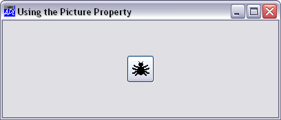
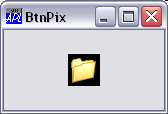
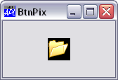

Picture buttons in toolbars are most conveniently represented by ToolButtons in ToolControls (see Chapter 4). Pictures on stand-alone buttons or buttons used in the (superseded) ToolBar object, may be created using Bitmap, Icon and Metafile objects and there are two different methods provided. The first (and the simplest) is to use the Picture property which applies to all 3 types of image,(Bitmap, Icon or Metafile). The second method is to use the BtnPix property. This requires rather more effort, and only draws Bitmaps, and not Icons or Metafiles. However, the BtnPix property gives you total control over the appearance of a Button which the Picture property does not.
The Picture property overlays a Bitmap, Icon or Metafile on top of a standard pushbutton. The following example uses an icon which is included with Dyalog APL.
dyalog←2 ⎕NQ'.' 'GetEnvironment' 'dyalog'
'spider'⎕WC'Icon'(dyalog,'ws\arachnid.ico')
'F'⎕WC'Form' 'Using the Picture Property'
'F.B'⎕WC'Button'('Coord' 'Pixel')('Size' 40 40)
F.B.Picture←spider 3
Notice that (by definition) an icon is 32 x 32 pixels in size. To allow space for the pushbutton borders you have to make the Button at least 40 x 40 pixels. The "3" means put the 'spider' in the centre of the button.
When you press a Button which has its Picture property set like this, APL automatically shifts the overlaid image down and to the right by 1 pixel. This complements the change in appearance of the button borders and achieves a "pressed-in" look. When you release the button, APL shifts the image back again.
The Picture property therefore provides a very simple mechanism for implementing a "tool-button", especially if you already have a bitmap or icon file that you want to use.
However, the Picture property has certain limitations. Firstly, you cannot alter the "pressed-in" look of the Button which is determined automatically for you. You might want the Button to change colour when you press it, and you cannot achieve this with the Picture property. Secondly, the appearance of the Button is unchanged when you make it inactive (by setting its Active property to 0).
Note that if you use the Picture property on Radio or Check buttons, the buttons assume pushbutton appearance although their radio/check behaviour is unaffected.
You can obtain complete control over the appearance of a Button by using the BtnPix property; however this entails more work on your part.
BtnPix allows you to associate three bitmaps with a Button, i.e.
For example, if you have created three Bitmap objects called UP, DOWN and DEAD, you define the Button as follows:
'F.B' ⎕WC 'Button' ('BtnPix' UP DOWN DEAD)APL subsequently displays one of the three Bitmap objects according to the state of the Button; i.e. UP for its normal state (State 0), DOWN for its pressed/selected state (State 1) or DEAD when it is inactive (Active 0).
The BtnPix property requires that you use Bitmap objects; it doesn't work for Icons. This is because icons are normally at least partly transparent. However, it is very easy to convert an icon file to a Bitmap object. First you create an Icon object from the icon (.ICO) file. Next you read the icon's pattern definition (Bits property) and colour map (CMap property) into the workspace. Then finally, you create a Bitmap from these two arrays.
The following example illustrates how you can make a Button from icons supplied with Windows.
Load a closed folder icon:
'T1'⎕WC'Icon'('Shell32.dll' ¯3)Read its Bits (pattern) and CMap (colour map):
Bits CMap ← 'T1' ⎕WG 'Bits' 'CMap'
Now define a Bitmap from these variables, (replacing the T1 object):
'T1' ⎕WC 'Bitmap' '' Bits CMap
Now make a second Bitmap:
'T2'⎕WC'Icon'('Shell32.dll' ¯4)
'T2'⎕WC'Bitmap' '','T2'⎕WG'Bits' 'CMap'Now define the Button. Notice that the third (inactive) bitmap is optional.
'F.B' ⎕WC 'Button' ('BtnPix' 'T1' 'T2')The pictures below show the button in its normal and pressed states.
|  |  |